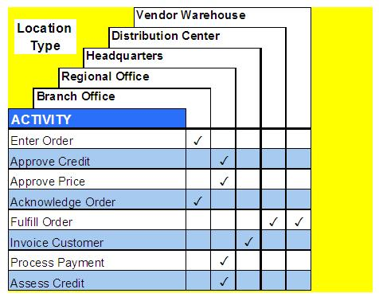

| Example: Process Definition Activity Matrices |
 |
|
| Related Elements |
|---|
Activity / Location Type Matrix The Activity / Location Type Matrix describes the location type (such as branch office, warehouse, or headquarters) at which each activity is performed.  Figure 1. Example of a Activity / Location Type Matrix Activity / Role Matrix The Activity / Role Matrix describes the role or organizational unit that will perform each activity. Examples of business roles are customer service representative, order entry clerk, and credit analyst.
Figure 2. Example of a Process / Role Matrix Activity / Technology Capability Matrix The Activity / Technology Capability Matrix is used to relate activities to the general types of technology used to support them. The chart below illustrates examples of technology capabilities in. You can assign multiple technology capabilities to single activities.
Figure 3. Example of an Activity / Technology Capability Matrix Activity / Information Matrix The Activity / Information Matrix relates Activity to the information entities which they create (C), read (R), update (U), or delete (D). We frequently call this type of matrix a CRUD matrix. It establishes the connection between activities and information types.
Figure 4. Example of an Activity / Information Matrix Activity / Application Matrix The Activity / Application Matrix is used to relate activities to the supporting applications.
Figure 5. Example of an Activity / Application Matrix |


| © Copyright IBM Corp. 1987, 2012 All Rights Reserved Property of IBM These materials are intended only for use as part of an IBM engagement |